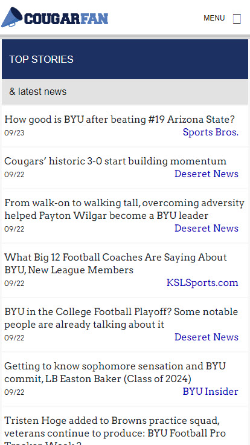
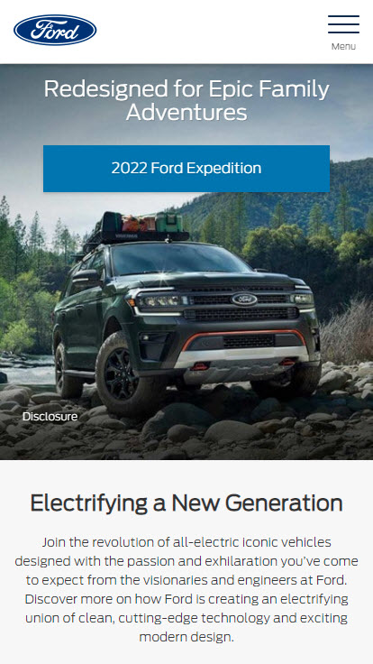

Alignment
CougarFan.com is a good example of using the principle of Alignment to make it easier for mobile users to find and access the content they want without too much difficulty
Proximity
Proximity allows you to understand that closely placed content is related. We can assume here that the picture of the SUV is the 2022 Ford Expedition simply due to placement.
Contrast

Contrast helps you to draw the eyes of the user to certain things like a product or a link. Stackoverflow does an exelent job of this by contrasting colors to make it easier to read and identify the button/link to navigate to.